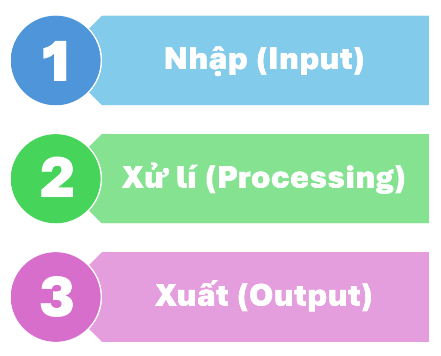

BÀI 1: THÔNG TIN VÀ XỬ LÍ THÔNG TIN
🎯 MỤC TIÊU BÀI HỌC
Học xong bài này, học sinh có thể:
- Hiểu được khái niệm
thông tin vàdữ liệu , phân biệt được các dạng thông tin. - Trình bày được
quá trình xử lí thông tin trong đời sống và trong máy tính. - Nhận biết được
cách biểu diễn thông tin trong máy tính bằng hệ nhị phân. - Phân biệt và quy đổi được các
đơn vị đo thông tin : bit, byte, KB, MB, GB.
🧩 1. Thông tin và dữ liệu
Thông tin là những gì giúp con người hiểu biết về thế giới xung quanh hoặc ra quyết định đúng đắn.
→ Ví dụ: “Hôm nay trời mưa” là một
Dữ liệu là hình thức biểu diễn của thông tin, thường ở dạng
→ Máy tính chỉ có thể xử lí dữ liệu, không trực tiếp hiểu thông tin.
🪄 Ví dụ:
- Thông tin: Kết quả thi môn Tin học là
9 điểm . - Dữ liệu: Con số “
9 ” được máy tính lưu trữ trong bộ nhớ.
🧠 2. Quá trình xử lí thông tin
Quá trình xử lí thông tin gồm
| Bước | Mô tả | Ví dụ |
|---|---|---|
| 1. Nhập ( |
Thu nhận dữ liệu đầu vào | Gõ số liệu điểm kiểm tra vào máy |
| 2. Xử lí ( |
Thực hiện tính toán, sắp xếp, so sánh... | Máy tính tính điểm trung bình |
| 3. Xuất ( |
Hiển thị kết quả ra màn hình, in ấn,... | Hiển thị kết quả trung bình |
💡 Trong cuộc sống, con người cũng xử lí thông tin theo quá trình tương tự (nghe – suy nghĩ – phản hồi).


💾 3. Biểu diễn thông tin trong máy tính
Máy tính chỉ hiểu hai trạng thái điện học: có điện (
→ Mọi thông tin (số, chữ, hình, âm thanh) đều được biểu diễn bằng
| Dạng thông tin | Cách biểu diễn trong máy tính |
|---|---|
| Biểu diễn trực tiếp bằng dãy nhị phân (ví dụ: 5 → |
|
| Mỗi ký tự được mã hóa bằng số (theo bảng mã |
|
| Gồm nhiều điểm ảnh ( |
|
| Biểu diễn bằng dãy số thể hiện biên độ dao động của sóng âm |
📏 4. Đơn vị đo thông tin
Các đơn vị lớn hơn:
| Đơn vị | Ký hiệu | Quan hệ xấp xỉ |
|---|---|---|
| KB | 1 KB ≈ 1 024 B | |
| MB | 1 MB ≈ 1 024 KB | |
| GB | 1 GB ≈ 1 024 MB | |
| TB | 1 TB ≈ 1 024 GB |
🔍 Ví dụ quy đổi:
1 MB ≈
📘 GHI NHỚ
Thông tin giúp con người hiểu biết;dữ liệu là hình thức lưu trữ thông tin.- Quá trình xử lí thông tin:
Nhập → Xử lí → Xuất . - Máy tính biểu diễn thông tin bằng
hệ nhị phân (0 và 1). - Đơn vị đo thông tin phổ biến:
bit ,byte ,KB ,MB ,GB .